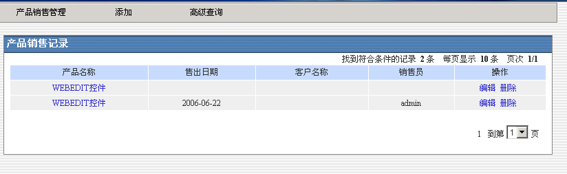

销售管理
产品销售包括：
A. 产品信息管理
产品信息管理包括“产品管理”、“新建产品”、“服务性产品管理”和“新建服务性产品”四种功能。
产品管理的界面如下，可以对已经增加的产品进行查询和管理。

销售合同管理主要是对单位的合同进行管理，主要包括新建和管理两个功能，查询功能针对具体的输入项进行查询，方便快捷的实现管理。

销售记录管理与产品管理类似，主要涉及销售记录的客户名称等等，客户信息来自客户关系模块，产品信息来自产品信息管理。
销售管理 |
产品销售包括： |
|
| 新建产品，包括新建产品的供应商和产品名称与产品信息 |
| 服务型产品管理和新建，可以增加服务型的产品信息并且实现管理和查询功能。 |
| B. 销售合同管理 销售合同管理主要是对单位的合同进行管理，主要包括新建和管理两个功能，查询功能针对具体的输入项进行查询，方便快捷的实现管理。 |
| C. 销售记录管理 销售记录管理与产品管理类似，主要涉及销售记录的客户名称等等，客户信息来自客户关系模块，产品信息来自产品信息管理。 |
|  |
| D.服务型产品销售记录 |